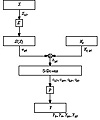

Click Here!


|
Click Here! |
|
| |
|
|
|
To access the contents, click the chapter and section titles.
Applied Cryptography, Second Edition: Protocols, Algorthms, and Source Code in C (cloth)
Linear Cryptanalysis Linear cryptanalysis is another type of cryptanalytic attack, invented by Mitsuru Matsui [1016,1015,1017]. This attack uses linear approximations to describe the action of a block cipher (in this case, DES.) This means that if you XOR some of the plaintext bits together, XOR some ciphertext bits together, and then XOR the result, you will get a single bit that is the XOR of some of the key bits. This is a linear approximation and will hold with some probability p. If p ≠ ½, then this bias can be exploited. Use collected plaintexts and associated ciphertexts to guess the values of the key bits. The more data you have, the more reliable the guess. The greater the bias, the greater the success rate with the same amount of data. How do you identify good linear approximations for DES? Find good 1-round linear approximations and join them together. (Again, ignore the initial and final permutations; they don’t affect the attack.) Look at the S-boxes. There are 6 input bits and 4 output bits. The input bits can be combined using XOR in 63 useful ways (26 - 1), and the output bits can be combined in 15 useful ways. Now, for each S-box you can evaluate the probability that for a randomly chosen input, an input XOR combination equals some output XOR combination. If there is a combination with a high enough bias, then linear cryptanalysis may work. If the linear approximations are unbiased, then they would hold for 32 of the 64 possible inputs. I’ll spare you the pages of tables, but the most biased S-box is S-box 5. In fact, the second input bit is equal to the XOR of all 4 output bits for only 12 inputs. This translates to a probability of 3/16, or a bias of 5/16, and is the most extreme bias in all the S-boxes. (Shamir noted this in [1423], but could not find a way to exploit it.) Figure 12.8 shows how to turn this into an attack against the DES round function. The input bit into S-box 5 is b26. (I am numbering the bits from left to right and from 1 to 64. Matsui ignores this convention with DES and numbers his bits from right to left and from 0 to 63. It’s enough to drive you mad.) The 4 output bits from S-box 5 are c17 c18 c19 and c20. We can trace b26 backwards from the input to the S-box. The bit a26 is XORed with a bit from the subkey Ki,26 to obtain b26. And bit X17 goes through the expansion permutation to become a26. After the S-box, the 4 output bits go through the P-box to become 4 output bits of the round function: Y3 Y8 Y14 and Y25. This means that with probability ½ - 5/16 : 
Linear approximations for different rounds can be joined in a manner similar to that discussed under differential cryptanalysis. Figure 12.9 is a 3-round approximation with a probability of ½ + .0061. The individual approximations are of varying quality: The last is very good, the first is pretty good, and the middle is bad. But together the three 1-round approximations give a very good three-round approximation. The basic attack is to use the best linear approximation for 16-round DES. It requires 247 known plaintext blocks, and will result in 1 key bit. That’s not very useful. If you interchange the role of plaintext and ciphertext and use decryption as well as encryption, you can get 2 key bits. That’s still not very useful.
There are refinements. Use a 14-round linear approximation for rounds 2 through 15. Guess the 6 subkey bits relevant to S-box 5 for the first and last rounds (12 key bits in all). Effectively you are doing 212 linear cryptanalyses in parallel and picking the correct one based on probabilities. This recovers the 12 bits plus the b26 and reversing plaintext and ciphertext recovers another 13 bits. To get the remaining 30 bits, use exhaustive search. There are other tricks, but that’s basically it. Against full 16-round DES, this attack can recover the key with an average of 243 known plaintexts. A software implementation of this attack recovered a DES key in 50 days using 12 HP9000/735 workstations [1019]. That is the most effective attack against DES at the time of this writing. Linear cryptanalysis is heavily dependent on the structure of the S-boxes and the S-boxes in DES are not optimized against this attack. In fact, the ordering of the S-boxes chosen for DES lies among the 9 percent to 16 percent that offer the least protection against linear cryptanalysis [1018]. According to Don Coppersmith [373,374], resistance to linear cryptanalysis “was not part of the design criteria of DES.” Either they didn’t know about linear cryptanalysis or they knew about something else even more powerful whose resistance criteria took precedence. Linear cryptanalysis is newer than differential cryptanalysis, and there may be more performance improvements in the coming years. Some ideas are proposed in [1270,811], but it is not clear that they can be used effectively against full DES. They work very well against reduced round variants, however. Future Directions Some work has been done to try to extend the concept of differential cryptanalysis to higher-order differentials [702,161,927,858,860]. Lars Knudsen uses something called partial differentials to attack 6-round DES; it requires 32 chosen plaintexts and 20,000 encryptions [860]. It is still too new to know if these extensions will make it easier to attack full 16-round DES. Another avenue of attack is differential-linear cryptanalysis: combining differential and linear cryptanalysis. Susan Langford and Hellman have an attack on 8-round DES that recovers 10 key bits with an 80 percent probability of success with 512 chosen plaintexts and a 95 percent probability of success with 768 chosen plaintexts [938]. After the attack, a brute-force search of the remaining keyspace (246 possible keys) is required. While this attack is comparable in time to previous attacks, it requires far less plaintext. However, it doesn’t seem to extend easily to more rounds. But this attack is still new and work continues. It is possible that there may be a breakthrough some time during the next few years. Maybe there are benefits in combining this attack with higher-order differential cryptanalysis. Who knows?
|
|
Products | Contact Us | About Us | Privacy | Ad Info | Home
Use of this site is subject to certain Terms & Conditions, Copyright © 1996-1999 EarthWeb Inc. All rights reserved. Reproduction whole or in part in any form or medium without express written permision of EarthWeb is prohibited.
|
)
){kind=link}
){kind=link}
){kind=link}